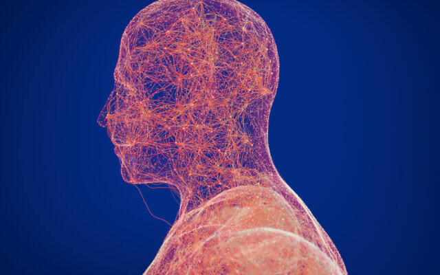
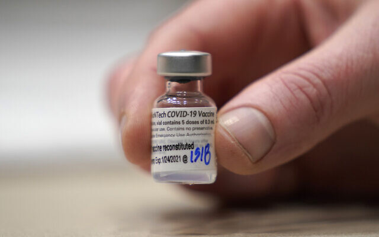
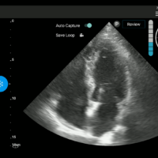
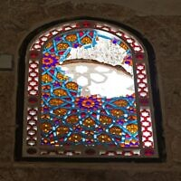
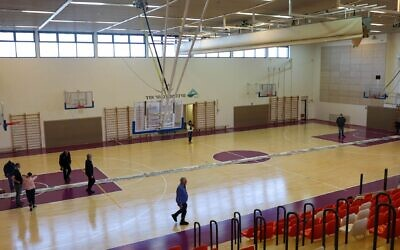

New Hope’s Shasha-Biton: Lockdown is unnecessary, ‘unequivocally political’
New Hope member Yifat Shasha-Biton, a fierce critic of the government’s coronavirus policy, on Saturday claimed the upcoming nationwide lockdown was unnecessary and 'unequivocally political.'
Israel will impose a lockdown from Sunday evening for at least two weeks to stem the rise in coronavirus infections, which have climbed to over 3,000 per day.
Shasha-Biton, a former Likud member who defected to Gideon Sa’ar’s new right-wing party two weeks ago, was asked in an interview with Channel 12 on Saturday if the lockdown is necessary.
'The answer is no, absolutely not.This lockdown is unequivocally political.I can’t find a single reason why we are heading into another lockdown when we haven’t even lifted the second lockdown,' she said.
Israel’s two previous lockdowns, in April and September, succeeded in bringing down infection numbers, but morbidity ballooned again as the closures were rolled back.
Free Sign Up
'In other countries they handled it differently, and in the period between lockdowns they allowed for some sort of normal life, and cultural venues were reopened.There is no logical reason why the cultural world has remained closed for so many months,' she said.
Following the formation of a new government in May, Shasha-Biton was named chairwoman of the Knesset’s Coronavirus Committee, where she earned popular acclaim for overturning and criticizing a number of the government’s coronavirus restrictions.Her decision to buck the prime minister also raised hackles from Prime Minister Benjamin Netanyahu and his allies, who later stripped the committee of its power to overturn government rules.
Earlier this month, Shasha-Biton joined Netanyahu’s rival Gideon Sa’ar’s party ahead of the March elections, the fourth national vote in two years.Polls have indicated the new right-wing list could become the second-largest, after Likud.
Israel currently has over 35,000 active coronavirus cases, of whom 584 are in serious condition.On Friday, 3,995 new cases were diagnosed, and 4.7% of tests returned positive, according to the Health Ministry.
To reduce the virus cases even as it ramps up its vaccination drive, the government last week approved another lockdown.
From Sunday at 5 p.m., lockdown rules will bar Israelis from entering another person’s home; restrict movement to 1 kilometer from home, with exceptions, such as for vaccinations; shut down commerce, leisure and entertainment (except for essentials); limit public transportation to 50% capacity; and limit workplaces that do not deal with customers face-to-face to 50% capacity.
Fines for those breaking rules stand at NIS 500 ($155).
Kindergartens and school grades 1-4 and 11-12 will study as usual during the lockdown, while grades 5-10 will study remotely.
Health officials have expressed optimism that the latest closure will be the nation’s last as it steps up its vaccination drive.
Netanyahu said Saturday he sought to reach a vaccination rate of around 150,000 people a day within a week, and to have inoculated over 2 million Israelis by the end of January.Though the Health Ministry had yet to issue updated figures after Shabbat, Channel 12 News reported that some 266,000 people had gotten the first of two shots by the end of the first week of Israel’s vaccination push.
I'm proud to work at The Times of Israel
I’ll tell you the truth: Life here in Israel isn’t always easy.But it's full of beauty and meaning.
I'm proud to work at The Times of Israel alongside colleagues who pour their hearts into their work day in, day out, to capture the complexity of this extraordinary place.
I believe our reporting sets an important tone of honesty and decency that's essential to understand what's really happening in Israel.It takes a lot of time, commitment and hard work from our team to get this right.
Your support, through membership in The Times of Israel Community, enables us to continue our work.Would you join our Community today?
Thank you,
Sarah Tuttle Singer, New Media Editor
Posted On: 2020-12-27T02:29:00
Posted By: TOI staff











Content Date: 2020-12-27
Download Date: 2021-05-13
Document ID: L0C04BZZY